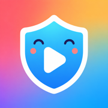
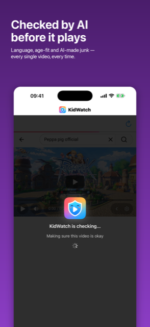
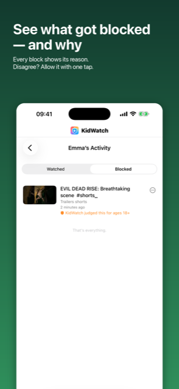
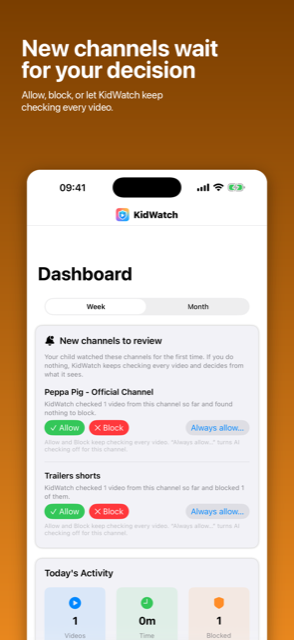
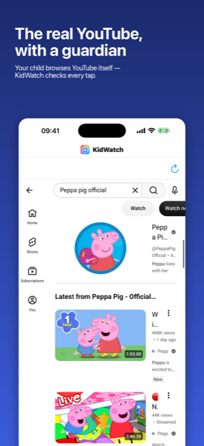

Not a walled garden. Not a kid-sized library. The actual YouTube your child asks for — with a check in front of every single video, and a dashboard that tells you exactly what it decided and why.
Download on the App StoreFree to download · iPhone & iPad · iOS 16+
Because children outgrow it and start asking for the real thing — and because it still serves algorithmic junk without ever telling you why it chose it.
KidWatch takes the opposite approach. Your child browses real youtube.com, exactly the app they actually want. But the moment they tap a video, playback pauses and the video gets read before a single frame plays.
Only the languages you choose — 24 supported, from English and Malay to Hindi and Japanese. Anything else is skipped automatically.
A 5-year-old and an 11-year-old get different answers. Each child profile has its own age and its own limits.
Synthetic voices, AI animation and mass-produced "content farm" videos get filtered out.
Block channels or keywords. Always-allow the favourites you already trust.




One app, not two. There's no second "monitoring" app to install on your child's device. The parent area is PIN-protected, stored in your device Keychain.
The real one — real youtube.com, including its own home feed and recommendations. KidWatch doesn't rebuild YouTube; it sits in front of playback. Every video your child taps is analysed before it starts, comments are hidden, and navigation is limited to an allowlist.
The video is blocked. The gate fails closed by design, on every path. A video that couldn't be verified is never given the benefit of the doubt.
KidWatch reads the video's own metadata — title, description, channel, language fields and YouTube's made-for-kids flag — and passes it to a language model that judges language, minimum suitable age, and whether it looks mass-produced or synthetic. You see the verdict and its reasoning in the dashboard.
No. Playback is intercepted before it begins, the player itself is locked down, and the parent area sits behind a PIN held in the iOS Keychain. If a video isn't approved, there's nothing to tap past.
Never. KidWatch keeps each child's profile and history so the parent features work, and you can delete your account or any child's data at any time, right inside the app.
Free to download, with a $0.99 first month of KidWatch Premium. See the full terms below.
KidWatch Premium is an auto-renewable monthly subscription with a $0.99 first month, then the regular monthly price (shown in the app before you confirm; local prices vary). Payment is charged to your Apple Account at confirmation of purchase. The subscription renews automatically unless cancelled at least 24 hours before the end of the current period. Manage or cancel in your Apple Account settings.
YouTube Kids alternatives for older children (7–12) — the real options when a child outgrows YouTube Kids but is not ready for unfiltered YouTube, and what each actually costs you.
How to spot and block AI-generated kids' videos on YouTube — what machine-made children's content looks like, why YouTube Kids doesn't filter it out, and every practical option for limiting it, including the ones that aren't an app.
SaySprout — for the younger ones. A speech-practice game where nothing moves until your child says the word out loud. No timer, no fail state, and speech recognition that never leaves the device.